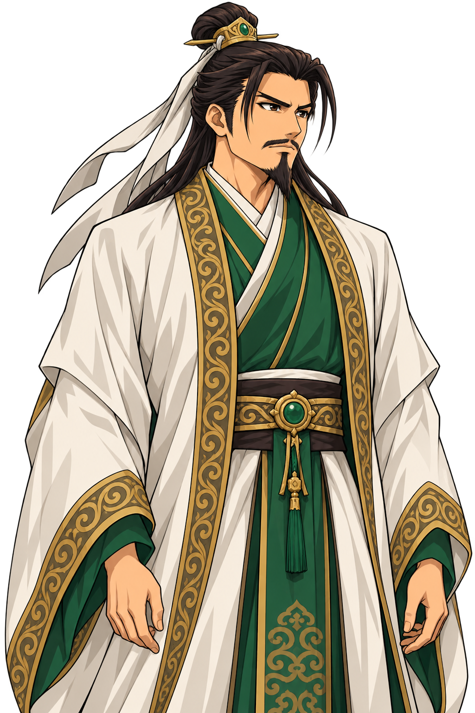

같은 머리–지면 기준으로 정렬한 전투 이미지와, 하나의 스탠딩 원본을 사용하는 대화·초상화 미리보기.
고유 인물은 머리부터 허리 아래까지 제작. 아래 대사는 화면 검토용 임시 문구입니다.

모두 준비되었는가. 함께 나아가세.
동일한 스탠딩 원본에서 얼굴 영역만 표시합니다.대화와 전투 카드의 얼굴이 서로 달라지지 않습니다.
불러오는 중…
제작 기준 · 전투 표시 좌표 · 이전 버전